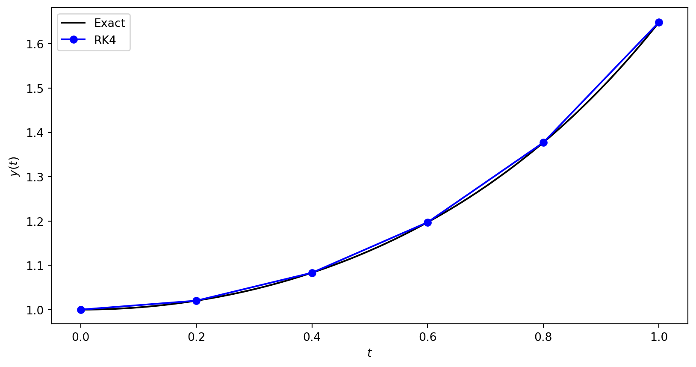

| t | y | Exact |
|:----:|:---------:|:---------:|
| 0.00 | 1.000000 | 1.000000 |
| 0.20 | 1.020201 | 1.020201 |
| 0.40 | 1.083287 | 1.083287 |
| 0.60 | 1.197217 | 1.197217 |
| 0.80 | 1.377126 | 1.377128 |
| 1.00 | 1.648717 | 1.648721 |